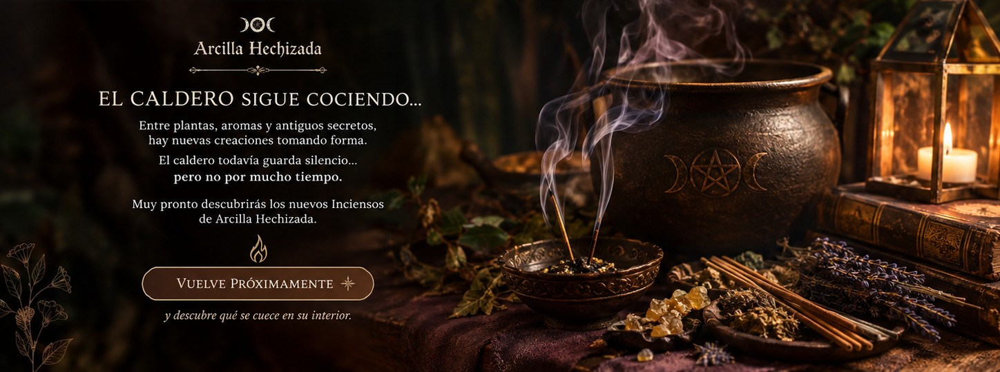

Inciensos naturales creados para acompañar tus espacios, rituales y momentos de calma.

Inciensos · Arcilla Hechizada
Aromas que están tomando forma
Entre plantas, aromas y antiguos secretos, el caldero sigue cociendo nuevas creaciones. Los próximos inciensos de Arcilla Hechizada están tomando forma, pensados para transformar el ambiente y acompañar tus momentos especiales.